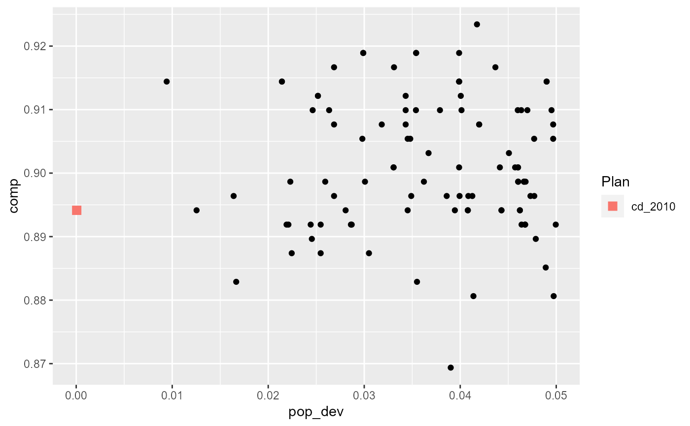

Makes a scatterplot of two quantities of interest across districts or plans.
redist.plot.scatter(plans, x, y, ..., bigger = TRUE)
| plans | the |
|---|---|
| x |
|
| y |
|
| ... | passed on to |
| bigger | if TRUE, make the point corresponding to the reference plan larger. |
A ggplot
library(dplyr) data(iowa) iowa = redist_map(iowa, existing_plan=cd_2010, pop_tol=0.05, total_pop = pop) plans = redist_smc(iowa, nsims=100, silent=TRUE) plans %>% mutate(comp = distr_compactness(iowa)) %>% group_by(draw) %>% summarize(pop_dev = max(abs(total_pop / mean(total_pop) - 1)), comp = comp[1]) %>% redist.plot.scatter(pop_dev, comp)